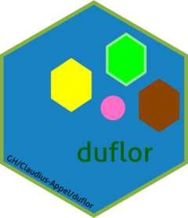

Function reference
-
prep_loading() - Set java-parameters required for VM-setup.
-
load_image() - load image as HSV or RGB-array
-
extract_pixels_HSV() - Extract pixels from image which fall inbetween lower- and upper bounds.
-
rectangularRange_HSV() - find pixels with color-values lying between upper_bound and lower_bound
-
rectangularRange_HSV_cpp() - 'C++'-implementation of
rectangularRange_HSV()
-
change_pixel_color_HSV() - handles color-translation from character-name to hsv and returns results of
duflor::apply_hsv_color_to_image_subset()
-
RGBtoHSV() - mirror of
imager::RGBtoHSV()
-
sRGBtoRGB() - mirror of
imager::sRGBtoRGB()
-
HSVtoRGB() - mirror of
imager::HSVtoRGB()
-
adjacency() - add 4D-adjacency-grouping to
pixel.idx-object
-
diagonal_adjacency() - add 8D-adjacency-grouping to
pixel.idx-object
-
retrieve_adjacency_coords() - return coordinates by cluster_id from
pixel.idx
-
pixels_to_area() - convert pixel counts to an area based on the known area of an identifier-dot.
-
validate_mask_edges() - Check for a given mask pixel.idx-object if its edges are clean
-
get_indicator_image() - wrapper around
change_pixel_color_HVS()for the intention of clarity.
-
plot_indicator_image() - Plot indicator-image for a given spectrum
-
plot_array_as_image_sRGB() - plot an rgb-array via graphics-package
-
apply_hsv_color_to_image_subset() - apply hsv-color to index-located pixels in array
-
norm_to_range_01() - normalise a vector to range
0-1
-
check_javaVM_setup() - Determine whether or not the java-VM required for "RBioFormats" is set up
-
get_unique_list_elements() - compare two lists and return all keys that are not present in both.
-
objs() - wrapper around
object.size()
-
.main_args() - pseudo-function to define default parameter documentation